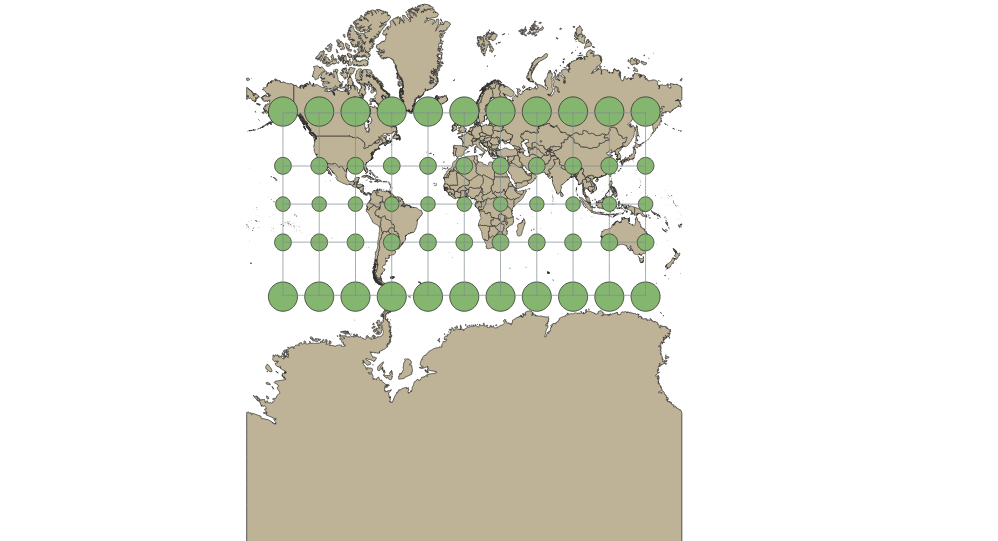
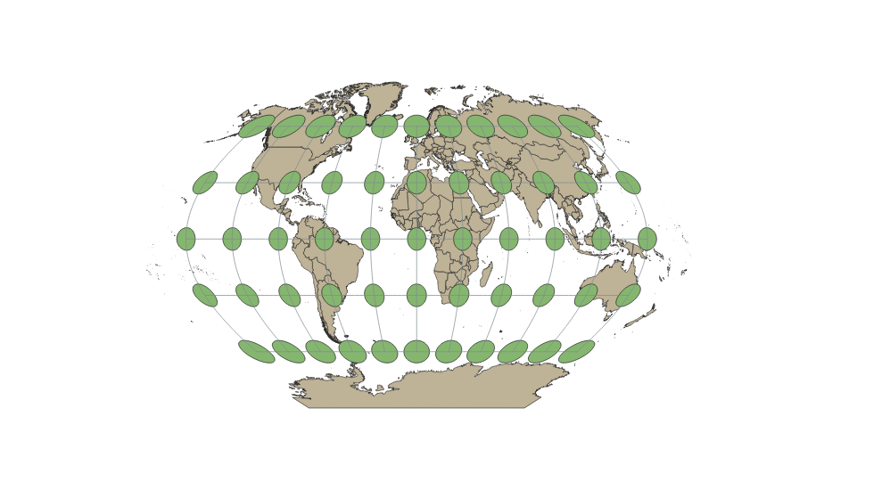
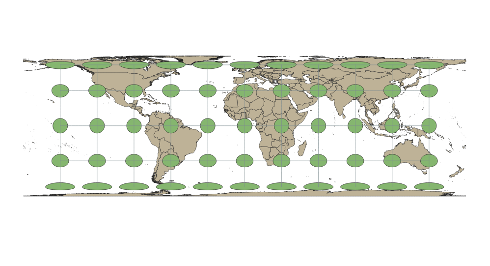
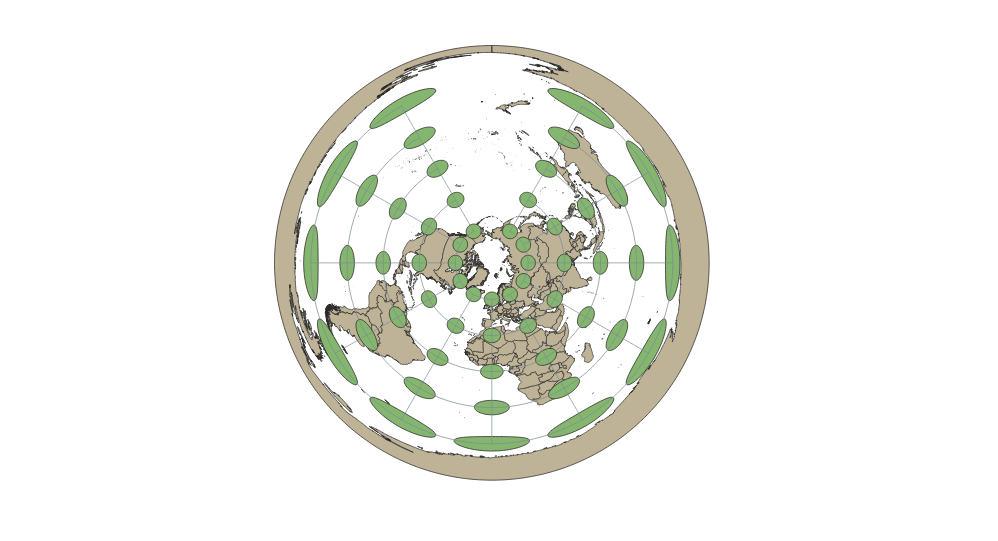
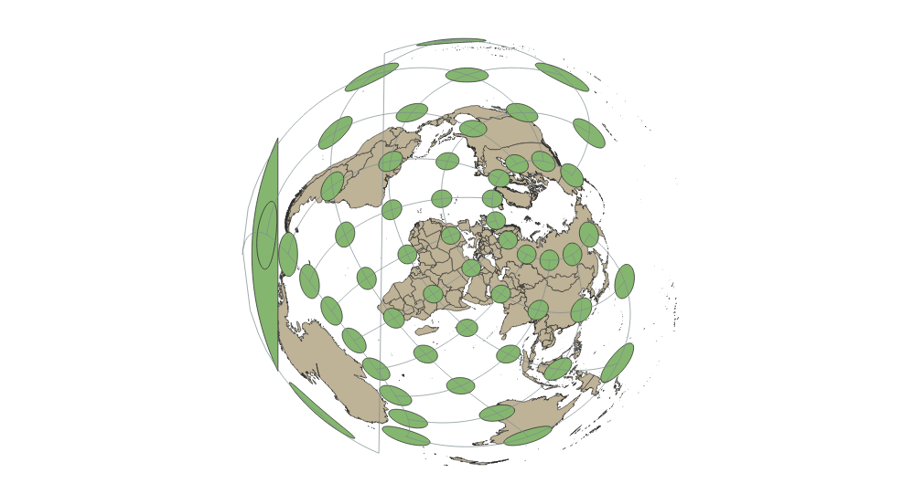
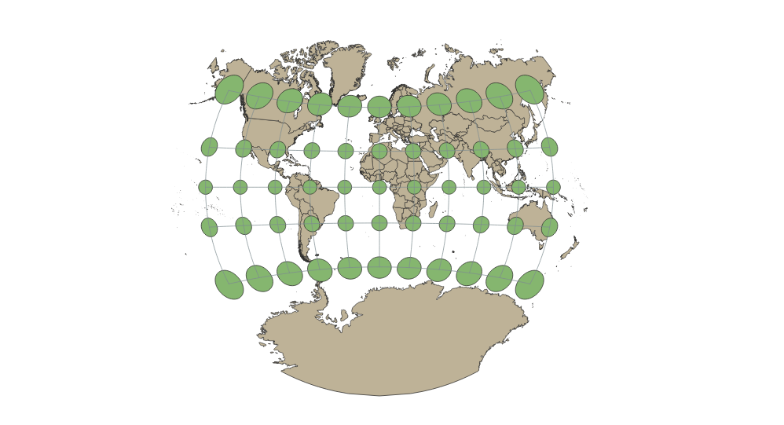

In this project I learned how to display images in different projections
Displaying the projections in QGIS
You can write a paragraph here
Pseudo Mercator 4326 Projection
This version of the mercator projection uses equirectangular projection. This helps preserve the area of the map. Shape and distance have a moderate distortion. It is used by Google Earth and other map systems.

Aitoff Projection
The Aitoff projection is azimuthal with a spherical basis and has moderate distortions. It works best for mapping on a smaller level. It keeps the shape of the countries well preserved and distorts direction and angles.

Pseudo-Mercator Projection 3857
This mercator projection uses a spherical model. It is based on the WGS84 datum. This style preserves area but moderately distorts shapes and directions. It is used by Google Maps and other map systems.

Winkel Tripel Projection
This projection style is azimuthal style, so it is based off of a spherical foundation. It keeps the equator and central meridian straight, and the other zone lines curve. The size distorts more towards the edges of the map. The shapes of continents are well preserved. Distance is preserved while direction has a distortion.

Equal Area Cylindrical
Based on meters, this projection is based on a cylinder. This projection works well for large-scale mapping use. It is good for navigation and direction, but distance may be warped.

World Equidistant Conic
With a conic basis, the directions shapes of this map are distorted. Distance is more well preserved than other features.
North Pole Equidistant
This projection is azimuthal. It preserves distance and presents a perspective as if the viewer is looking down on Earth's globe. The shapes are harder to distinguish and would not be used for navigational use. The meridians are straight and cross through the North Pole.

Two Point Equidistant
This projection is spherical and equidistant, so it preserves distance well on the map. The shapes of continents warp more as you reach the far edges of the globe. This would be most useful for long range mapping use. Two loci points are used with an accurate distance between the two to base the map on.

Van Der Grinten/h2>
This is a spherical projection. It warps the poles very heavily, but not the continents near the equator as intensely. The world is portrayed with a curved look while still laying the Earth on a horizontal axis.

Now, you should add the following projections on your own:
EPSG: 3857, 53018, 54034, 54027, 102016, and two additional projections that you choose.
Data used for this project
Download Natrual Earth 1:10m Cultural Vector